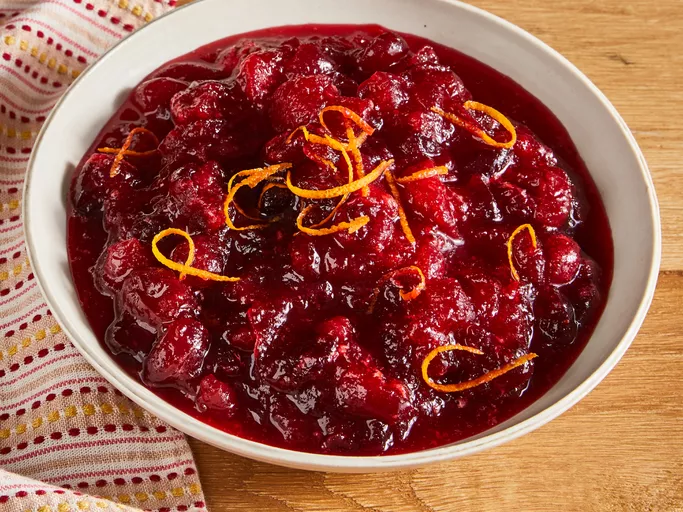

Home
Cranberry Sauce

This cranberry sauce recipe combines fresh cranberries,
sugar, and orange juice for a quick, easy side that adds a
burst of tangy flavor to your Thanksgiving meal.
Ingredients
- 1 cup white sugar
- 1 cup orange juice
- 12 ounces fresh cranberries
Steps
- Combine sugar and orange juice in a medium saucepan. Cook over medium heat, stirring, until the sugar dissolves and the mixture begins to simmer.
- Add cranberries and cook uncovered, stirring occasionally, until most of the berries pop and the sauce begins to thicken, 8 to 10 minutes.
- Remove from heat and transfer sauce to a bowl. Let cool; the sauce will continue to thicken as it cools. Serve at room temperature or cover and refrigerate until chilled.